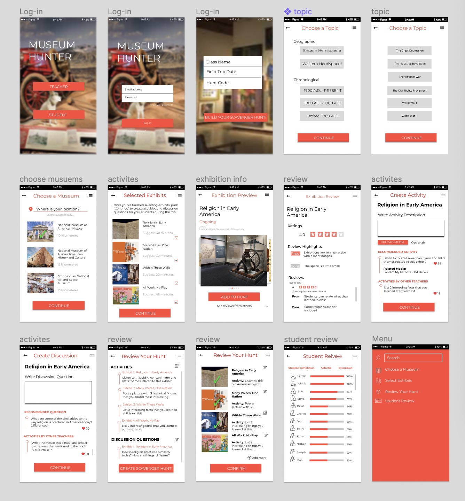
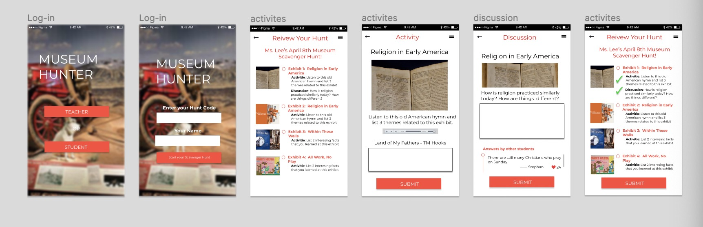

A Mobile App
that would help 150,000+ teachers to develop contextualized museum lessons

that would help 150,000+ teachers to develop contextualized museum lessons
With three project partners from Teachers College, Columbia University
When going to the museum, each trip should be catered to support and contextualize exactly what that class is learning at that moment in time. More often than not, however, trips to the museum are not facilitated in a way that provides students a bridge to formal learning. Given the amount of time and effort that it would take for a museum educator to work with teachers in customizing the experience for each class, it is unreasonable to expect that museum educators would be able to develop individualized lessons for each class visiting the museum.The lack of resources allocated to connecting museum educators and teachers makes it difficult to create a learning experience that truly contextualizes the museum experience in terms of the work being done in the classroom.
The target audience for this project are teachers grades from 6th to 8th grade. While other users can fall outside of this grade range, we have decided to focus on this demographic where students are still gaining foundational knowledge; whereas pre-6th grade students are still learning basic human skills (reading and writing), and post-8th grade students are learning in-depth concepts.
The project aims to address the disconnect between formal classroom learning and informal learning that occurs during museum field trips. The goal is to provide a resource that allows them to easily contextualize museum artifacts in terms of what is being covered in the classroom at that time.
Learning Objectives
1. Learners will be able to create meaningful museum learning experiences.
2. Learners will be able to use an app to facilitate the process of developing a museum lesson that contextualizes in-class material.
3. Learners will transition from decontextualized museum tour field trips to app-based customized museum learning for their students.
Our approach to designing this app draws primarily on information seeking behavior theories. In information seeking, learners have decided to gather information about a given topic, as a response to the identification of a need for said information. It is an active search for information to be able to answer a given question or set of questions. Wilson (2006) discusses his 2002 model of information seeking as the “idea of a problem solving process to which recurrent searches for information are connected as information problems are experienced in the process of solving the more general research problem” (p. 28). Our idea is that teachers identify that students are unable to connect museum field trips and formal learning as a problem, they will seek information about the exhibits through our app, and will resolve this through the creation of museum scavenger hunts.
For teachers, they can use the app to create customized scavenger hunt in the museums that fit their learning goals, incorporating engaging activities and interactive discussions.
For students, they can use the app to explore the museums by the scavenger hunt created by their teachers and see the exploration of other users.
Click to explore the interactive prototype
The evaluation will be structured based on three parts, teachers' experience, students' experience, and delivery platform (for developer use).
For the instructor, the app has its built-in function to collect data to support the learning environment better. The Exhibition Review page can help the instructor with ratings, review highlights, and reviews of the existing hunt route. Whether they chose to create their unique scavenger route or simply follow a success example, these will all be helpful information for the next user.
For the students, a page full of collections they found in the museum will be a rewarding experience after the hunt, just like an honor wall, this is also the learning material that helps them review what they have learned in the hunt. The number of collection they have, how many times a student click a collection, what is a students' preference when choosing a scavenger hunt can also help an instructor when organizing a hunt.